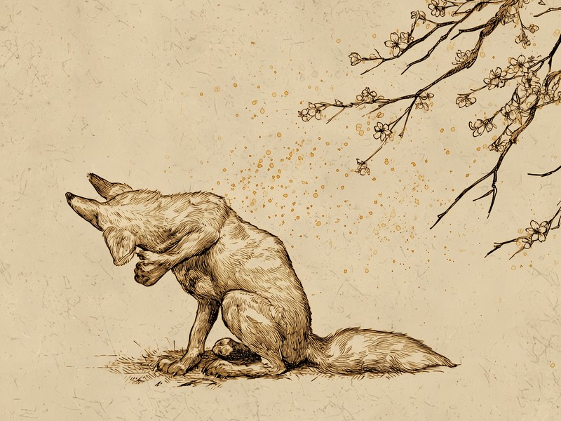

春になると多くの人を悩ませる花粉症。実は犬や猫も同じ花粉で症状が出ることがあるのですが、その現れ方は人間とはずいぶん違うようです。 Pets get hay fever too. It just shows on their skin, not their nose.
犬や猫にも花粉症がある、と分かったのは意外と最近
犬や猫も、人間と同じように花粉に反応するアレルギー、いわゆる花粉症になることがあります。あまり知られていませんが、獣医学の世界では確かめられている事実です。犬の花粉症は1990年代半ばごろからアメリカで臨床例が報告されるようになり、猫でもスギなどの花粉によるアレルギー症状が2000年前後から知られるようになったと言われています。人間の花粉症に比べると、ペットの花粉症は「見つかってからまだ日が浅い」存在なのです。同じ春の空気を吸っているのに、その正体が分かるまでにはずいぶん時間差があったのですね。
鼻や目ではなく、肌に出る——ペットの花粉症の不思議
人間の花粉症といえば、くしゃみ・鼻水・目のかゆみが定番です。ところが犬や猫の場合、花粉アレルギーの症状は主に「皮膚」に現れます。体をしきりにかゆがる、前足の先をなめ続ける、皮膚が赤くなる、といったサインです。これは、犬や猫のアレルギー反応の経路が、呼吸器よりも皮膚を中心にしているためだと考えられています。原因となる花粉は人間と同じでも、体がそれを受け止める場所が違えば、出てくるサインもまったく違ってくるのです。同じ春を、人は鼻で、犬や猫は肌で感じている、と言えるかもしれません。
出典: Jensen-Jarolim, E. et al. "Pollen Allergies in Humans and their Dogs, Cats and Horses: Differences and Similarities" Clinical and Translational Allergy, 2015. pmc.ncbi.nlm.nih.gov
犬や猫より先に見つかっていた、野生のニホンザルの花粉症
実は、犬や猫の花粉症が広く知られるようになるよりも前から、「動物も花粉症になる」ことを示す先例がありました。野生のニホンザルにもスギ花粉によるアレルギー症状が見られることが研究で報告されており、動物の花粉症は犬や猫だけの話ではないと考えられています。山に暮らす野生のサルが人間と同じスギ花粉に反応しているという事実は、花粉症が「人間だけのもの」ではないことを静かに物語っています。
猫とニホンザルで確認されている花粉症は、どちらも日本の春でおなじみのスギ花粉によるものです。人間、猫、そして野生のサルが、種を超えて同じ木の花粉に反応しているというわけですね。春のスギ林は、人間だけでなく、ずいぶん多くの動物にとっての「季節の試練」なのかもしれません。